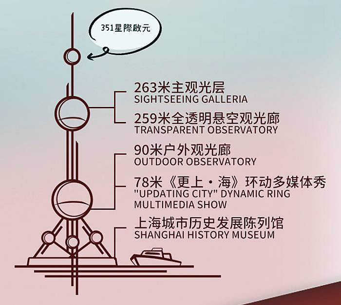
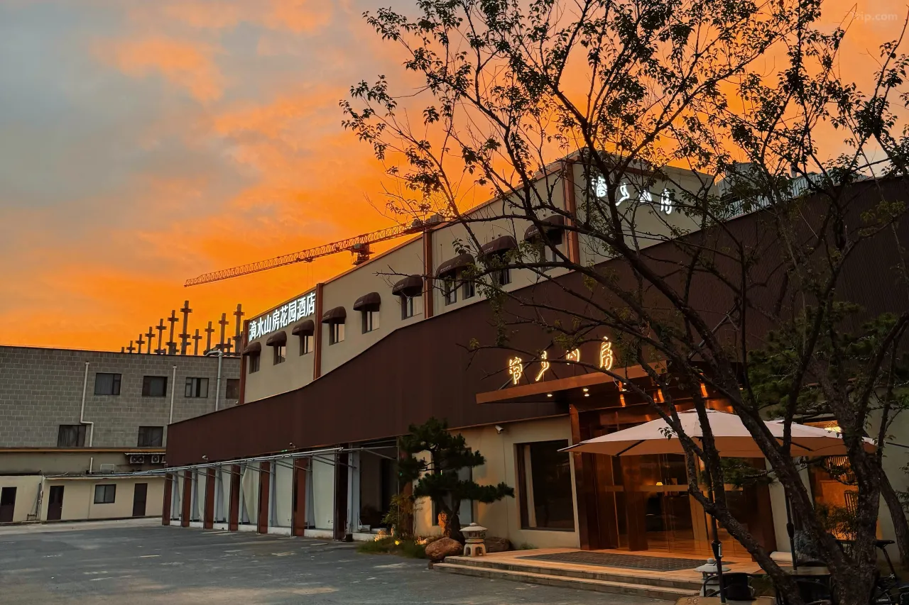

高雄 → 上海浦東
上海南京步行街・四行倉庫・外灘夜景・萬國建築群
高雄機場集合
準備通關手續
※ 僅限 CHECK IN 櫃台 現金付款 (依當天匯率)，無法刷卡
推薦景點
夜間活動
東方明珠塔
門票：💰二球觀光199元、三球觀光299元、二球觀光+旋轉餐廳自助餐368元起
※二球觀光：可參觀 263 公尺主觀光層、259 公尺全透明懸空觀光廊、90 公尺戶外觀光廊、78公尺《更上·海》環動多媒體秀 以及上海城市歷史發展陳列館。
※三球觀光：可參觀 351 公尺星際啟元航天文旅展、263 公尺主觀光層、259 公尺全透明懸空觀光廊、90 公尺戶外觀光廊、78公尺《更上·海》環動多媒體秀以及上海城市歷史發展陳列館。
 📍 【上海景點】上海地標建築：東方明珠塔東方明珠塔的亮燈時間會根據季節的不同有所變化：
🔹夏季：晚上19：00開始亮燈，持續到22:30
🔹冬季：晚上18：00開始亮燈，持續到22:00
🔹特殊情況：在5月20日晚，東方明珠塔會點亮粉色主題燈光，並打出「520」等字樣，亮燈時間從19:00持續到23：00

夜遊黃浦江遊船
搭乘中華號和東方明珠號浦江觀光遊船，碼頭位於明珠塔西面200多公尺處的海鷗舫，白天從10:00開始就有多個班次，晚上19:00、20:00各有一班;行程將近一小時。
 📍 【上海攻略】正確賞玩黃浦江的方式，觀光遊船 vs. 2元渡輪
📍 【上海攻略】正確賞玩黃浦江的方式，觀光遊船 vs. 2元渡輪
📸 最佳拍照點：白玉蘭廣場L層-人民咖啡館 / 陸家嘴圓環天橋
上海 → 成都
太古里・春熙路・九眼橋夜景
搭乘地鐵10號線
前往虹橋機場T1航廈，車程約30-40分鐘
司機接機
司機接機後，前往酒店辦理入住
⚠️ 當天無導遊，司機僅負責接機並送回酒店
推薦景點


九眼橋夜景
欣賞成都最美夜景，感受酒吧街氛圍
 📍 成都九眼橋夜生活指南
📍 成都九眼橋夜生活指南
高反預防備註
預防高反，記得去藥局買 紅景天/丹木斯
📋 服用方式：上山前一天開始吃，一天2次、一次半顆，下了山就不用再吃
💊 或在台灣直接去藥房買「海拔適」
成都 → 黃龍景區
高鐵・黃龍鈣華彩池・雪山森林
司機接站
乘車前往黃龍景區（約50分鐘車程）

前往九寨溝口
遊覽結束後，乘專車前往九寨溝口酒店（約2小時車程）
美食建議
景區附近以團餐為主，建議找一家藏式餐廳品嚐：
推薦景點
九寨溝深度遊覽
長海・五彩池・諾日朗瀑布・樹正群海
酒店早餐
前往九寨溝景區
九寨溝深度遊覽
一日遊覽路線建議
🎯 乘車先到頂部，再由上往下遊覽：
美食建議
📍 景區內
諾日朗餐廳提供自助餐。建議自備乾糧和水。
📍 九寨溝口
晚餐推薦高山蔬菜和野菌燉雞
返回成都 - 歷史文化遊
武侯祠・錦里・寬窄巷子
酒店早餐
乘車前往黃龍九寨高鐵站
美食建議
📍 錦里
美食小吃匯集地
📍 寬窄巷子/琴台路
可找一家茶館體驗蓋碗茶和川劇變臉表演
推薦景點
熊貓基地 & 樂山大佛
大熊貓繁育研究基地・船遊樂山大佛
大熊貓繁育研究基地
⏱️ 開放時間：07:30-18:00
🚗 約40分鐘車程抵達
⏰ 建議早上09:00前入園（大熊貓最活躍時段）
💡 優先前往幼年大熊貓別墅，觀看幼崽機會較大
自行午餐
樂山大佛
約15:00抵達
🚢 船遊樂山大佛
「山是一尊佛，佛是一座山」
體驗從江面欣賞71米高的世界最大石刻佛像

峨眉山金頂 → 上海
十方普賢金像・金頂四大奇觀
峨眉山金頂
乘車前往天府機場
約2.5小時車程，19:00前抵達成都天府T2
滴水山房花園酒店
（上海虹橋機場國會展中心店）
 📍 上海長寧區空港一路366號� 滴水山房花園酒店trip簡介(含照片與附近景點)
🚶 從虹橋第一航廈步行約3分鐘（160公尺）
美食建議
📍 峨眉山區：早餐或午餐推薦
烏鎮西柵一日遊
江南水鄉・古鎮風情
前往烏鎮
單程177公里，約1.5小時車程
烏鎮西柵景區
漫步江南水鄉，體驗古鎮慢生活
上海一日遊 & 返程
豫園・四行倉庫・武康路・孫中山故居・世博園區・徐家匯
返回上海市區
上海一日遊
前往浦東機場
18:30前抵達上海浦東T2
• 基本超件費：每件 美金 140 元
• 重量 23~32kg：加收 0.5 件費用
• 重量 32~45kg：加收 3 件費用 (需經核可)
• 尺寸 158~203cm：加收 1 件費用
• 尺寸 203~292cm：加收 2 件費用
旅程圓滿結束
期待下次的精彩旅程！